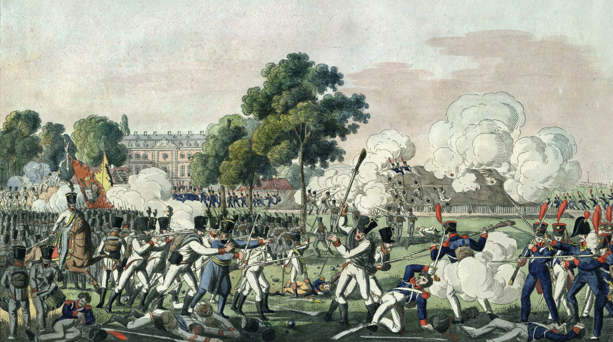
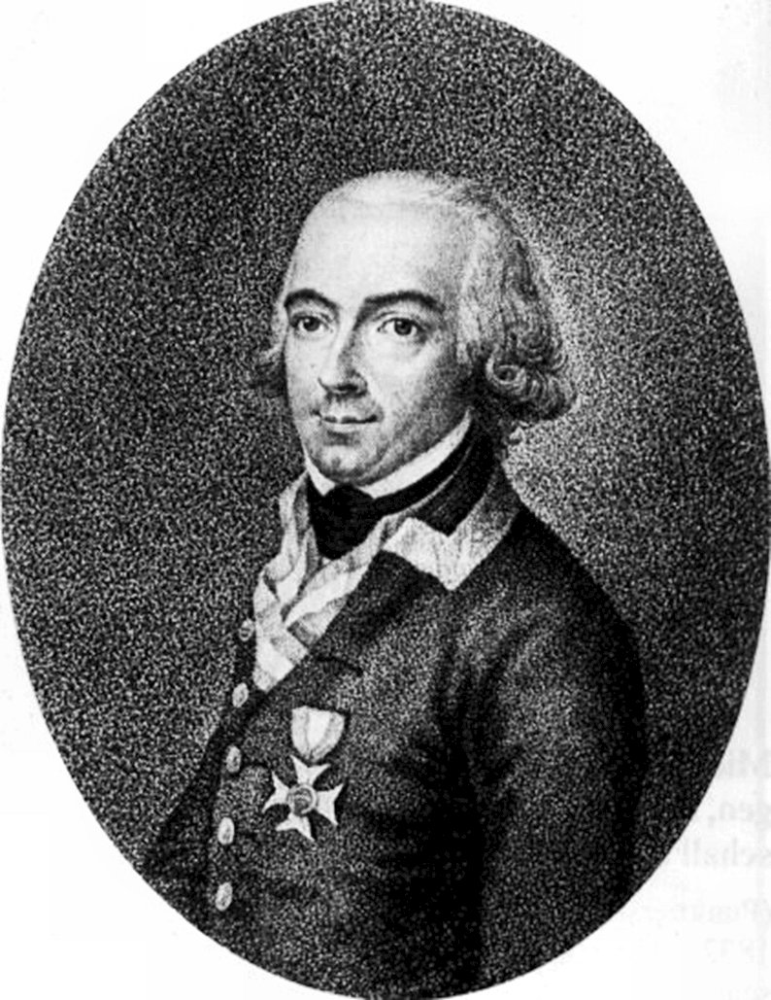
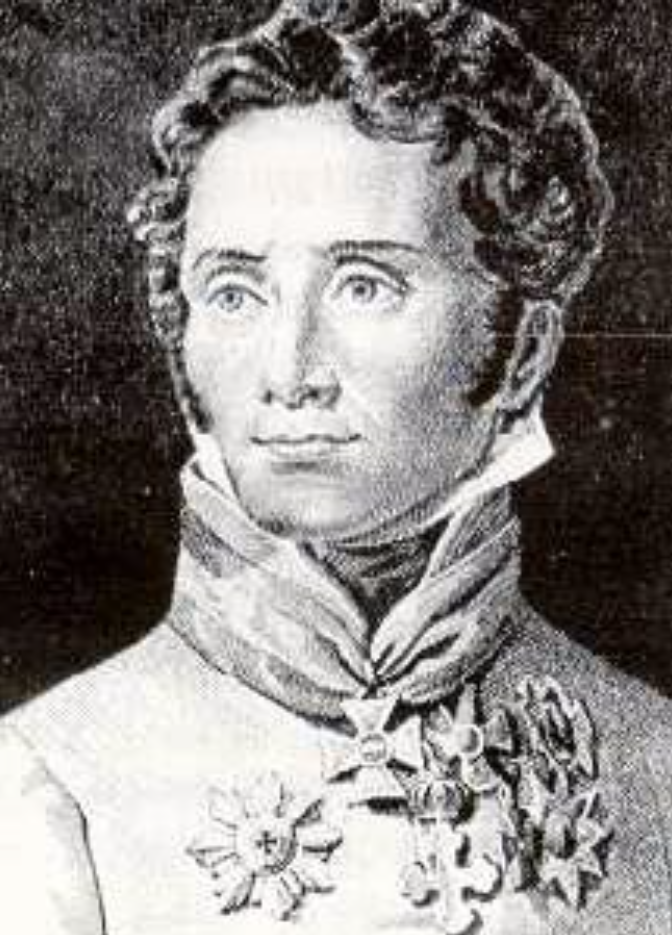
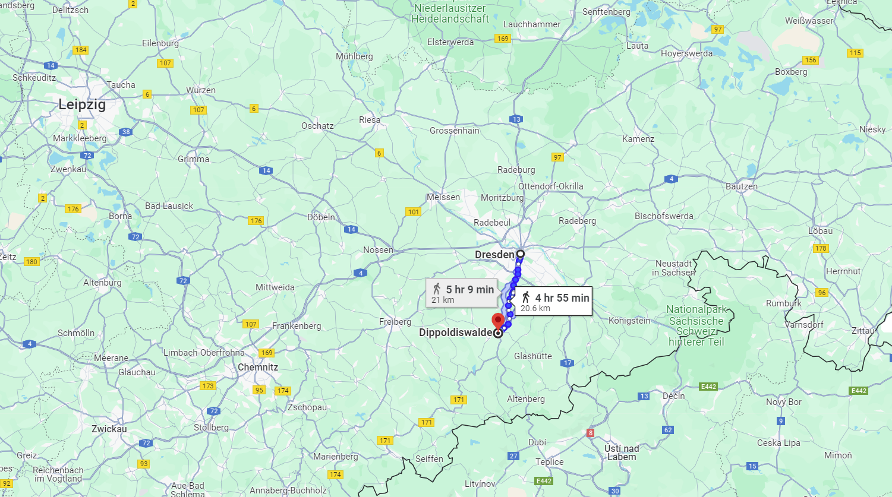
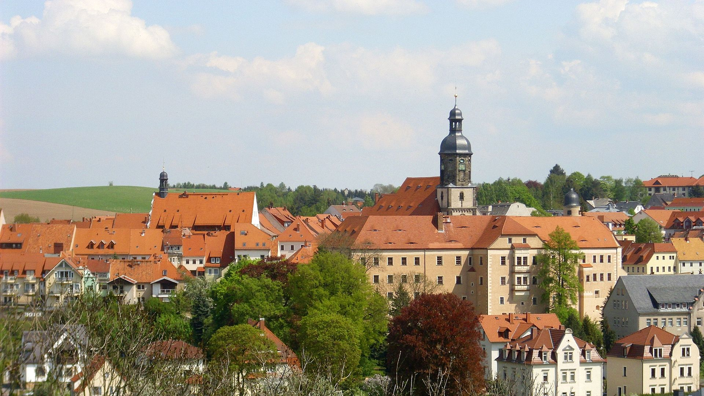

드레스덴 전투 (6) - 도끼자루가 썩다
게시: 2024-03-25T06:30:09+09:00
총 5갈래의 공격 중 2번 프로이센군의 공격이 가장 먼저 시작된 것은 나름 치밀하게 머리를 쓴 결과였습니다. 만약 번호 순서대로 1번 공격부터 시작했다면 프랑스군이 보기에도 맨 좌익(보헤미아 방면군에서 봤을 때는 우익)부터 시작하여 차례차례 우익의 공격이 이어지는 셈이었습니다. 1~3번의 공격은 미끼이고 결정타는 4~5번의 공격이니, 공격이 결국 우익까지 이어진다는 것을 프랑스군이 눈치채게 해서는 안 되었습니다. 그래서 2번이 먼저 공격한 뒤, 이어서 더 좌측인 1번이 공격을 들어가고, 그 다음에 중앙쪽인 3번이 쳐들어가게 한 것입니다. 목적이 그랬기 때문에, 오전 5시에 프로이센군이 슈트렐렌(Strehlen) 마을로부터 그로서가르텐으로 우르르 밀고 들어가 그 곳을 지키던 프랑스군과 혈투를 벌이는 동안 나머지 보헤미아 방면군은 일부러 가만히 있었습니다. 그렇게 프로이센군의 공격이 시작된지 2시간이 지난 오전 7시경에야 약속대로 러시아군의 1번 공격이 그로서가르텐의 북동쪽 방향에서 시작되었고, 이렇게 되자 공원 내의 프랑스군은 눈에 띄게 밀리기 시작했습니다. 엘베 강 건너편, 그러니까 노이슈타트 일대의 프랑스군 포대에서 맹렬한 지원 포격이 날아와 강변에 노출된 러시아군의 1번 공격 부대를 강타한 탓도 있었지만, 프로이센군과 러시아군은 일부러 요란만 떨고 속도를 조절한 것인지 진격도 느렸습니다. 일단 공원의 담을 넘은 뒤에는 일사천리로 공원 전체를 점령할 수도 있었을 것 같은데, 폭은 1km도 안 되고 길이도 고작 2km 정도인 공원의 중앙부까지 점령한 것은 무려 3시간이 지난 오전 8시경이었습니다.

(그로서가르텐에서 혈투를 벌이는 프로이센군과 프랑스군의 모습입니다.)
이렇게 프랑스군의 관심을 모조리 드레스덴 남동쪽에 쏠리게 한 사이, 오스트리아군의 진짜 공격이 시작되었습니다. 덕분에 이들의 공격은 비교적 순조로왔지만 역시 매우 신속한 전개를 보여주지는 못했습니다. 오전 9시경까지 이들은 프랑스군을 밀어내고 드레스덴 외곽선 바로 밖에 있는 펠트슐뢰쉔(Feldschlößchen) 마을까지 점령했지만, 프랑스군의 1차 방어선인 4번 보루와 5번 보루를 뚫지 못하고 밀려났습니다. 이 공격들은 페이크 모션이 아니라 진짜 공격이었는데도 이 모양이었다는 것은 뭔가가 잘못되었다는 뜻이었습니다. 4번과 5번 보루는 상당히 떨어져 있어서 그냥 각각 고립된 작은 수십 미터짜리 요새에 불과했고, 특히 4번 보루는 앞에 커다란 건물이 자리잡고 있어서 적군에게 제대로 된 사격을 퍼부을 수 없는 곳이었는데도 그걸 못 뚫고 밀려났다는 것은 이제 막 참전하여 오랜만에 실전을 겪는 오스트리아군의 실력을 보여주는 대목입니다. 알고 보면 그럴 수 밖에 없었던 것이, 보헤미아 방면군 수뇌부는 각자 확고한 전술전략을 가진 사람이 많아서 토론은 기가 막히게 길었지만, 정작 중대 단위의 세부적인 부분을 챙기는 사람이 아무도 없어서 오스트리아군은 아무도 사다리를 가지고 있지 않았던 것입니다. 오스트리아군의 5번 공격, 즉 프랑스군 방어선의 맨 오른쪽, 즉 프리드리히슈타트 마을 점령도 시원치 않았습니다. 그 방면의 프랑스군을 프리드리히슈타트 마을 안쪽으로 몰아내는 것까지는 해냈으나, 마을을 점령하지는 못했습니다.

(오스트리아군의 4번 공격을 이끌었던 차스텔러(Johann Gabriel Chasteler de Courcelles) 장군입니다. 이 양반은 독특하게도 현재의 벨기에, 당시 네덜란드에서 태어난 왈룬(Walloons) 사람입니다. 왈룬 귀족인 그는 일찍부터 당시 네덜란드 지방의 소유권을 가진 합스부르크 왕가에 충성하여 오스트리아군에서 공병장교로 복무했으며, 주로 투르크군과의 싸웠습니다. 그는 오스트리아군 내에서 복무한 네덜란드 출신 장군들 중 거의 마지막 세대라고 일컬어집니다.)

(오스트리아군의 5번 공격을 지휘한 비안키(Vinzenz Ferrerius Friedrich Freiherr von Bianchi, Duke of Casalanza) 장군입니다. 나폴레옹보다 1살 연상이었던 비안키도 공병장교 출신입니다. 1812년 러시아 원정 때도 슈바르첸베르크 밑에서 싸웠습니다. 카살란자 공작이라는 그의 작위는 나폴레옹 전쟁 때가 아니라, 나폴리 국왕 자리를 지키겠다며 1815년 빈 회의의 결정에 저항하는 뮈라를 1815년 톨렌티노(Tolentino) 전투에서 꺾고 얻은 것입니다.) 이 1번~5번의 공격은 결국 정오까지도 더 이상 진전을 이루지 못하고 돈좌되고 말았습니다. 1~2번 공격과 5번 공격, 그러니까 양쪽 날개 끝부분에서의 공격은 그나마 약간의 성과를 보였으나 중앙부인 3~4번 공격은 아무런 성과가 없었습니다. 3~5번 공격은 오스트리아군이 오랜만에 싸우는 것이라 아직 몸이 덜 풀렸기 때문이라고 해도, 러시아군과 프로이센군의 1~2번 공격은 왜 도중에 멈췄을까요? 그로서가르텐의 절반 정도만 점령하고 더 이상 진격을 하지 않았던 것은 아무리 그게 미끼 공격이라고 해도 약간 이해가 가지 않는 일이었습니다. 실은 이유가 있었습니다. 일단 분명히 이 오전 공격은 탐색전일 뿐, 진짜 전력을 다한 공격은 오후 3시에 다시 시작하기로 이미 세부적인 시간 약속이 되어 있었던 것입니다. 하지만 그것 말고도, 중대한 변수가 생긴 것이 더 큰 이유였습니다. 남쪽 고지대에서 망원경으로 전황을 바라보던 보헤미아 수뇌부에게 오전 9시 반 즈음해서 드레스덴 시내에서 뭔가 소동이 벌어지는 것이 보였습니다. 적진에서 소란이 벌어진다는 것은 아군에게는 좋은 소식인 것이 일반적입니다만, 곧 이어 들려오는 함성소리는 결코 좋은 소식이 아니었습니다. 그 소리는 바로 매우 익숙한 Vive l'Empereur (비브 랑페뢰르, 황제폐하 만세)였던 것입니다. 나폴레옹의 도착이 분명했습니다. 곧 보헤미아 방면군 사령부도 드레스덴 시내 못지 않게 분주해졌습니다. 사실 한 사람의 도착이 만들어낼 차이는 크지 않았습니다. 그러나 나폴레옹이 혼자 드레스덴에 입성하지는 않을 것이고, 바로 이어서 상당 규모의 증원군이 도착하리라는 것이 분명했습니다. 여기서 토론을 좋아하는 보헤미아 방면군 사령부에서는 또 갑론을박이 벌어졌습니다. 이렇게 시시각각 변화하는 전장에서 중요한 결정을 신속하게 내리는 것이 지휘관의 역할인데, 이렇게 뭔가 일이 생길 때마다 백분토론을 벌이는 것이 옳은 일이었을까요? 당연히 옳지 않습니다. 그래서 기본 작전계획이라는 것이 필요한 것이고 실은 그게 이미 존재했습니다. 바로 이럴 때 쓰라고 만든 트라헨베르크 의정서였습니다. 그런데 기억들 하시겠지만 원래의 트라헨베르크 의정서는 베르나도트가 내놓은 안을 러시아-프로이센이 좀더 공격적으로 뜯어고친 것인데, 오스트리아까지 참전한 이후 확정된 트라헨베르크 의정서는 원래 안에 훨씬 더 소극적인 오스트리아 라데츠키의 라이헨바흐 작전안을 어영부영 녹여 넣은 잡탕이었습니다. 그러니까 현재의 작전안대로라면 나폴레옹의 직접 공격을 받은 방면군은 후퇴를 하는 것이 맞았습니다. 의외로 짜르 알렉산드르는 후퇴에 찬성하는 편이었습니다. 모로와 함께 그를 보좌하던 조미니가 그렇게 권고했기 때문이었습니다. 조미니는 누구보다 나폴레옹을 잘 알고 있었습니다. 나폴레옹은 틀림없이 그가 애지중지하는 근위대를 끌고 왔을 텐데 그들의 막강한 전력도 문제였고, 나폴레옹의 존재 자체가 주는 사기 진작 효과도 절대 무시 못할 수준이라는 것을 조미니는 잘 알고 있었습니다. 무엇보다, 아침 내내 삽질을 해대는 오스트리아군의 수준을 보니 나폴레옹과 정면으로 부딪히면 승산이 보이지 않는다고 조미니는 판단했던 것입니다. 그는 '일단 디아폴디스발더(Dippoldiswalde)로 후퇴하여 북부 방면군 및 슐레지엔 방면군과 연계할 준비를 하자'라고 진언했고, 알렉산드르는 그의 의견에 찬성했습니다.

(디아폴디스발더는 드레스덴 남서쪽으로 약 20km, 그러니까 대략 5시간 행군 거리였습니다. 곧장 보헤미아로 후퇴할 수 있는 페터스발트나 엘베강을 도강할 수 있는 바로 인근 도시 피르나가 아닌 디아폴디스발더를 후퇴 지점으로 지목한 것은 조미니의 탁월성을 보여줍니다. 원래 연합군의 공격 목표는 드레스덴이 아니라 좀 더 전략적인 위치인 라이프치히였는데, 디아폴디스발더로 물러나면 라이프치히에서 북부 방면군 및 더 나아가 슐레지엔 방면군과 합동 작전을 펼칠 수도 있기 때문입니다.)

(디아폴디스발더의 현재 모습입니다. 저쪽 동네에 대해 언제나 감탄하는 것이 저렇게 작은 지방 소도시도 아름답게 잘 정돈된 풍경을 자랑한다는 것입니다. 디아폴디스발더는 현재 인구 1만4천 정도입니다.) 어제 누구보다 앞장 서서 즉각 공격하자고 나대던 알렉산드르가 후퇴하자고 하니, 조심성 많은 슈바르첸베르크는 속으로 옳다커니를 외치며 좋아했습니다. 그러나, 연합군의 작전은 언제나 그런 것이 문제인데, 그는 오스트리아군의 체면을 차린답시고 프랑스군의 주력 전체가 온 것도 아니고 나폴레옹 하나가 왔다고 해서 물러서는 것이 맞느냐는 식으로 형식적인 반론을 제시하는 우를 범했습니다. 그만 거기서 그의 체면 차리는 반론을 냉큼 주워들고 적극 동조하는 사람이 있었던 것입니다. 바로 찌질이 프리드리히 빌헬름이었습니다. 프리드리히 빌헬름은 어렵게 모아놓은 보헤미아 방면군이 이런 식으로 맥없이 물러난다면 혹시라도 연합이 깨지고 프로이센의 독립도 물거품처럼 사라지는 것이 아닌가 두려웠던 것입니다. 이렇게 시작된 토론은 반론에 반론을 거듭하며 백분을 넘어 끝도 없이 이어졌습니다. 나폴레옹이 몰고온 지원군이 엘베강의 다리를 건너 노이슈타트에서 알트슈타트로 속속 들어오는 것이 뻔히 보이는 와중에도 이 토론은 도끼자루 썩는 줄 모르고 계속 되었습니다. 그러나 연합군 중에서 가장 큰 지분을 가진 알렉산드르와 형식상의 총사령관인 슈바르첸베르크의 의견이 일치했으므로, 결국 후퇴하기로 최종 결정이 내려졌습니다. 그런데 그렇게 결론을 지은 군주들과 장군들의 귀에 연달아 이어지는 3방의 대포 소리가 들려왔습니다. 이건 오후 3시에 재개하기로 한 주공격을 시작하라는 신호였습니다. 사람들이 서둘러 회중시계를 꺼내보니, 정말 어느덧 시계는 오후 3시를 가리키고 있었습니다. Source : The Life of Napoleon Bonaparte, by William Milligan Sloane Napoleon and the Struggle for Germany, by Leggiere, Michael V With Napoleon's Guns by Colonel Jean-Nicolas-Auguste Noël https://warfarehistorynetwork.com/article/napoleons-last-great-victory-the-battle-of-dresden/ https://en.wikipedia.org/wiki/Battle_of_Dresden https://en.wikipedia.org/wiki/Dippoldiswalde http://www.historyofwar.org/articles/battles_dresden_26_aug.html https://en.wikipedia.org/wiki/Johann_Gabriel_Chasteler_de_Courcelles http://napoleonistyka.atspace.com/BATTLE_OF_DRESDEN.htm https://de.wikipedia.org/wiki/Gro%C3%9Fer_Garten_%28Dresden%29 https://en.wikipedia.org/wiki/Frederick_Bianchi,_Duke_of_Casalanza